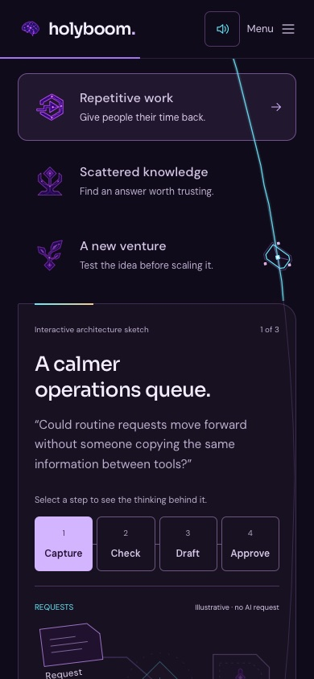
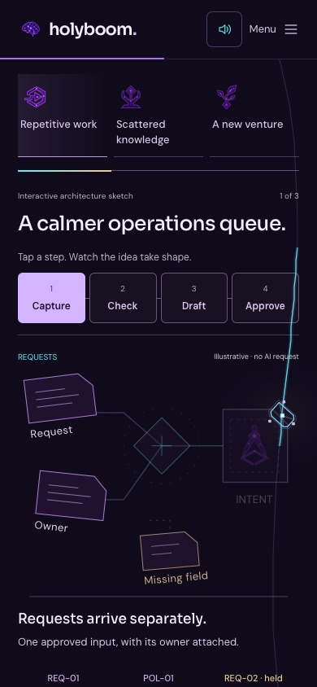
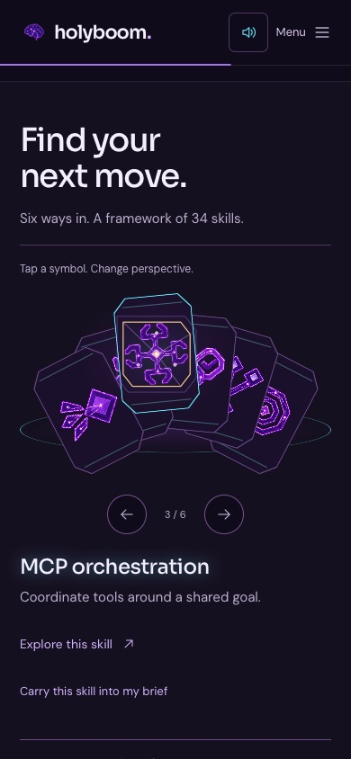
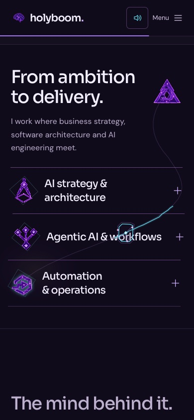

Keep the wonder.
Lose the repetition.
The brain, unfolding system, optical skill deck and reversible fireworks remain. Repeated explanations and the long skill wall no longer stand between the visitor and Boom.
35.8% shorter overall; the start of Boom moves from 11,406 to 6,669 pixels. Default displayed text: 740 → 402 whitespace-delimited words. Same 390 × 844 viewport, fresh session, optional details closed. These are page measurements, not visitor retention statistics.
| Step | Main route | Detail remains available |
|---|---|---|
| 1 · Hero | Original brain; no repeated principle strip | Sound mix and all 14 reactions |
| 2 · Orbit | Three short moves | Same reversible journey |
| 3 · Ribbon | A shorter crossing | Same original symbols |
| 4 · System | 0–100 assembly and live visual example | Thinking, guardrails, sources and brief |
| 5 · Skills | Six-skill optical fan | All 34 skills, search and filters |
| 6 · Practice | Three compact service rails | Service details open on demand |
| 7 · Boom | Original full-stop celebration | Expanded bio and source-linked glow |
| 8 · Contact | The portal and your chosen question | Review, return, copy and clear |
A demonstration, not a wall of text.


One featured instrument. Depth by choice.


All original art and audio assets remain unchanged. The v26 piano-after-fireworks fix, native scrolling, four sound controls, 259 particles and long recorded tails are retained. Testing uses browser automation and emulated mobile input, not a physical iPhone. No claim of improved conversion or complete accessibility certification is made.